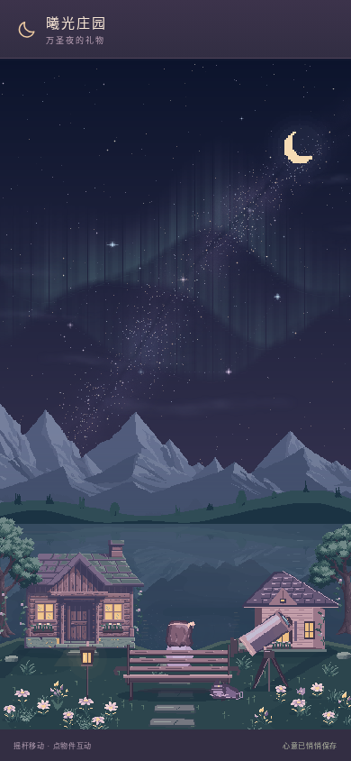
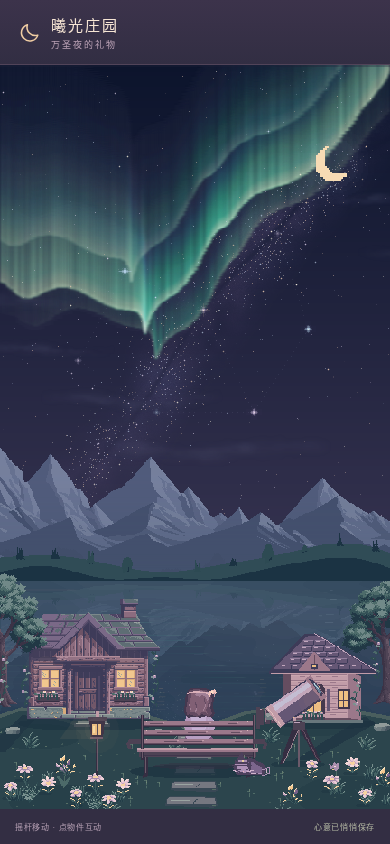
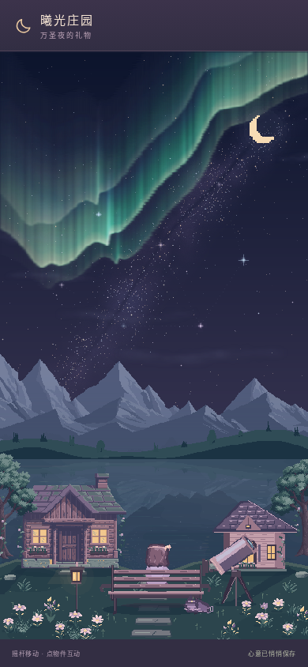

让极光，像柔软的光幕一样流动。
保留熟悉的庄园，只精修天空：青绿的折叠光幕、发亮的下缘、向上渐隐的细光丝，以及湖面里很淡的碎光。星星依然清晰，风景依然安静。
进入星光观景台即可欣赏。若之前关闭过极光，可在「回忆册 → 月夜极光」重新开启。预览无需登录，正式站未覆盖。


光幕会慢慢舒展。
这里是同一场景第24秒的实际画面。光幕的折叠与细光丝缓慢迁移，正常模式每秒最多刷新10次缓存；减少动态时保留静止风景。

保留熟悉的庄园，只精修天空：青绿的折叠光幕、发亮的下缘、向上渐隐的细光丝，以及湖面里很淡的碎光。星星依然清晰，风景依然安静。
进入星光观景台即可欣赏。若之前关闭过极光，可在「回忆册 → 月夜极光」重新开启。预览无需登录，正式站未覆盖。


这里是同一场景第24秒的实际画面。光幕的折叠与细光丝缓慢迁移，正常模式每秒最多刷新10次缓存；减少动态时保留静止风景。
